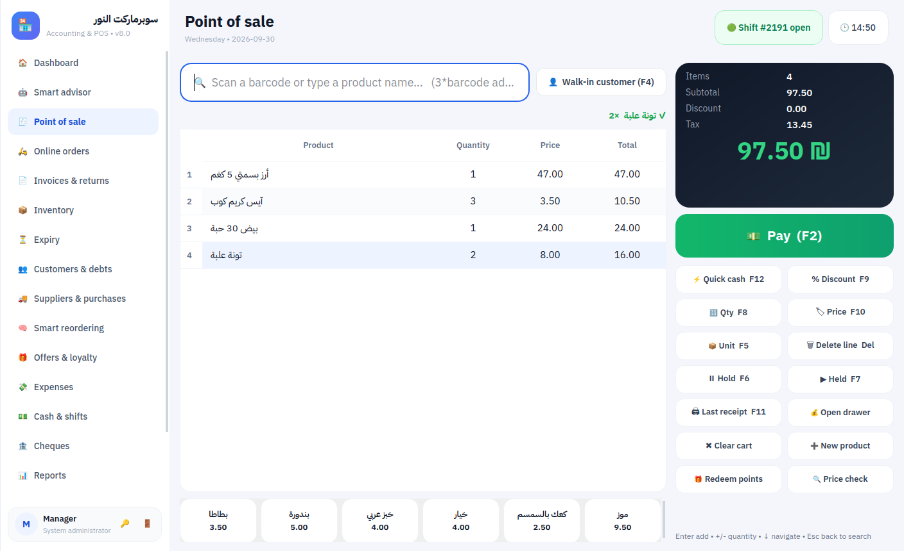
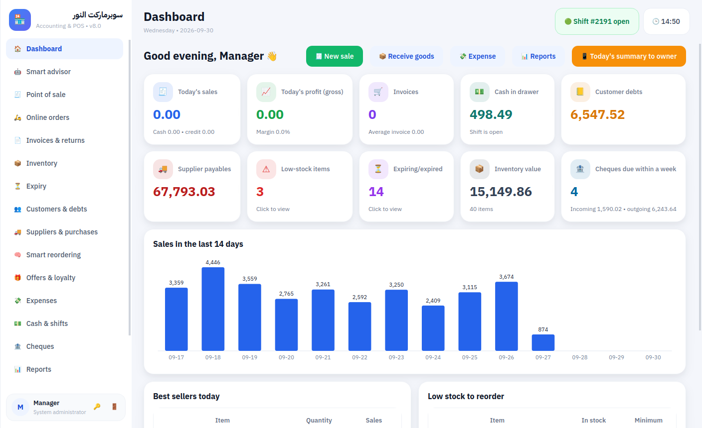
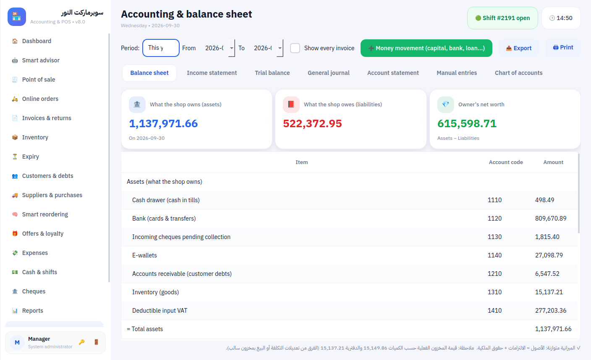
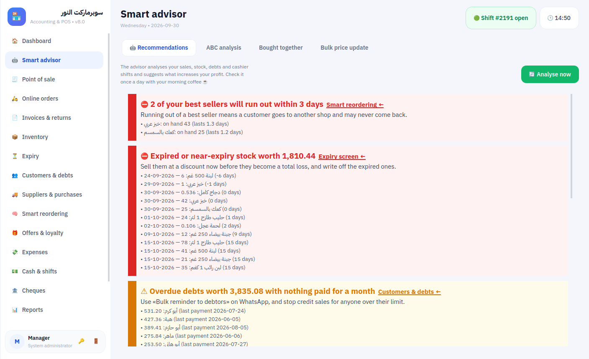
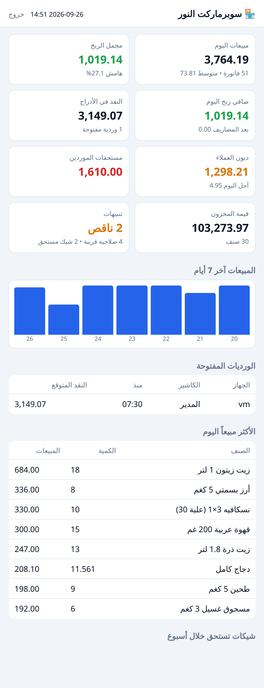

Shop Accounting & POS — Product Sheet
Point of sale + real accounting for grocery stores, mini-markets and small supermarkets. Works fully offline on your own computer, in English and Arabic. Free forever plan, then Plus, Pro and Max — and your first month is the full Max plan, free.

Shop assistant
- Ask your shop — type a question the way you'd ask your accountant (English, Arabic or Arabic dialect): “sales yesterday?”, “who owes me money?”, “how much milk is left?”, “compare this month with last month”, “what should I prepare for Ramadan?”. Instant answers from your own data, offline. Ctrl+K from any screen.
- Sales & cash-flow forecast — next 30 days day by day with a confidence band; expected cash including salaries, cheques, purchases and collections, with a warning before cash runs short.
- Seasons & Ramadan planner — Hijri calendar: Ramadan, both Eids, back to school and summer, with last season's uplift per item, a first-order quantity and an order-by date.
- Zakat calculator — zakat on trade goods straight from the books, nisab by gold price, Hijri or Gregorian year, next zakat date and a printable report.
- Dark, light or auto theme, and your logo on every screen and every printout.
Why shop owners choose it
- Fast checkout — barcode, weighing-scale labels, cartons vs. pieces, hold/recall, quick keys,
3*barcode. - Never stops selling — no internet needed. With several tills, cashiers keep selling even if the main computer goes down; sales sync automatically, without duplicates.
- Know your real profit — cost of goods, discounts, returns, expenses, write-offs and cash shortages are all included. Automatic double-entry accounting gives you an income statement, balance sheet and trial balance without typing a single journal entry.
- Smart advisor — every morning: items sold at a loss, best sellers about to run out, dead stock, customers who stopped coming, late debts, unusual cashier discounts, peak hours, items bought together.
- Customer credit & post-dated cheques — statements, credit limits, WhatsApp reminders, cheque due-date alerts, bounced cheques restore the debt automatically.
- Inventory done right — batches & expiry dates (first-expiry-first-out), stock counts, loss tracking, returns to suppliers, ABC analysis, smart reorder suggestions sent to suppliers on WhatsApp.
- Grow sales — automatic offers (buy X get Y, bundle price, % off a category), loyalty points, wholesale price levels, bulk price updates by target margin.
- Control — cashier shifts with cash counting, manager approval for sensitive actions, full activity log, server-side permission checks.
- Owner on the go — dashboard on the owner's phone and a daily WhatsApp summary.
- VAT ready — output and input VAT with a VAT return report, and an e-invoice QR code on receipts (Saudi simplified tax invoice format).
- Connected e-invoicing (optional) — Saudi Fatoora phase 2 (UBL 2.1, ECDSA digital signature, invoice hash chain, phase-2 QR, onboarding with ZATCA compliance checks, background reporting) and Jordan's national system JoFotara (official QR printed on the receipt). Selling continues offline; invoices are sent when the connection returns.
- No small change — round any invoice up to a whole number with one tap (or by default); the difference goes to its own account outside VAT and is refunded on a full return.
- Price changes handled properly — returns are refunded at the original invoice price, price overrides at the till keep both prices for the auditor, and an automatic shelf-label queue collects every item whose price changed.
- Phone app with an offline copy — staff and owner app on the shop Wi-Fi (prices and stock counts by camera, low stock, debts with WhatsApp reminders, orders, ask your shop); on connecting the owner chooses Sync to keep the data up to the last close on the phone (till closings, this month and the last 30 days, prices, low stock, debts) and open it anywhere without a connection, or Stay connected.
- Online ordering — a mobile store page for pickup or delivery orders; orders become POS invoices in one click. No commissions to delivery apps.
- Android app — finds the shop automatically on Wi-Fi. Tabs by permission: today's figures, price and stock lookup with shelf counts by camera, low stock, customers and debts with WhatsApp reminders, handling online orders, and Ask your shop; plus the owner dashboard.
- Card terminal ready — sends the amount to the bank card terminal and prints the approval code on the receipt (bank-specific connection required).
- Simple mode & touch screens — a lighter layout for small corner shops, big buttons and an on-screen keypad for touch tills.
- Easy switch — import your old credit book (customers, suppliers and balances) from Excel in a minute.
- E-wallets & banking apps — one tap per method (e.g. instant bank transfer, mobile wallets): shows your account and QR code to the customer, records the transaction number, keeps a separate e-wallet account in the books, and a reconciliation report per method.
- Daily, weekly, monthly and yearly summaries — sales, profit, expenses and payment mix per period, adding up exactly to the profit report.
- Training copy with 3 years of data — a complete supermarket history (online orders, current and former staff, three branches) to train staff and explore reports without touching real data; opens from inside the program.
- Multi-currency cash — accept cash in other currencies at your exchange rate.
- Your data stays yours — stored on your computer with daily backups and an optional cloud copy (Google Drive / OneDrive).
- Built-in financial auditor — 47 audit procedures on every transaction (not a sample): ledger reconciliations, document sequence gaps, cashier fraud indicators (quick sale-and-refund by the same cashier, after-hours sales, cash refunds on card sales, reused wallet references, repeated shortages, manual price cuts), purchase-cost jumps, duplicate customers, payroll anomalies, bank reconciliation, e-invoice reporting, debt aging with a doubtful-debt allowance, Benford's law, data-file integrity. Gives a clean/qualified/adverse opinion, a score out of 100 and a printable report.
- Ready for the financial inspector or tax auditor — a temporary, view-only inspector account (the database itself opens read-only for them) that expires on its own, with every screen they open logged; a readiness check before the visit; and a one-click inspector file: the whole period in Excel-ready CSV plus a SAF-T (XML) standard audit file, financial statements and the audit report, each file SHA-256 fingerprinted with a signed handover record.
- Accountant autopilot — comparative income statement, 12 financial ratios explained in plain words (liquidity, cash cycle, break-even, cash runway…), bank reconciliation, fixed assets with automatic depreciation, cash flow statement and one-click month close that locks the books.
- Payroll — monthly salaries, bonuses and deductions, advances deducted automatically from the next salary, payslips for any past month and an employee statement, all flowing into expenses, profit and the cash drawer.
- Customer installments — split a customer's debt into a dated schedule; payments are applied to the oldest installment, overdue ones trigger advisor alerts and WhatsApp reminders.
- Branches & chains — each branch works independently; the owner sees every branch and the total in one report, read from a shared Google Drive folder.
- Everyday tools — a calculator on every screen (Ctrl+=) that inserts its result into the field you were typing in; math inside every amount field (
12*3.5+4,100+16%); a pricing calculator from cost and target margin to the shelf price incl. VAT and back; notes and repeating reminders shared with your staff; and one-click updates that verify, back up, install and reopen. - Fits any screen, any language — modern mobile-app style interface that adapts to small laptops, and switches between Arabic and English instantly.
 |  |
 |  |
Plans (yearly, USD) — less than half the price of the matching global product
| Plan | Tills | Per year | Matching global product (per year) | Adds |
|---|---|---|---|---|
| 🌱 Free | 1 | $0 forever | — | POS, inventory & expiry, customer/supplier debts, cards & e-wallets, shifts, reports & VAT, mobile price-check app |
| ⚡ Plus | 2 | $290 (≈ $24/mo) | Square Plus $588 | Smart advisor, smart reorder, offers & loyalty, cheques, installments, stock counting from phone |
| 💎 Pro | 5 | $890 (≈ $74/mo) | Lightspeed Retail Core $1,788 | Accounting & balance sheet, accountant autopilot, financial audit, payroll, online store, owner dashboard, zakat |
| 👑 Max | unlimited | $1,730 (≈ $144/mo) | Lightspeed Retail Plus $3,468 | Ask your shop, forecasting, seasons planner, branches |
First 30 days: the full Max plan, free. Afterwards the program moves to Free — selling never stops and your data is never locked. See how we compare with 11 Arab and global products.
Requirements
Windows 10/11 PC, any thermal receipt printer (58/80 mm), USB barcode scanner, optional cash drawer and customer display. Multiple tills connect over the shop's local network.
Contact: Al-Hassan Software & Advertising — Abdulrahman Al-Abed — WhatsApp +970 59 245 8157